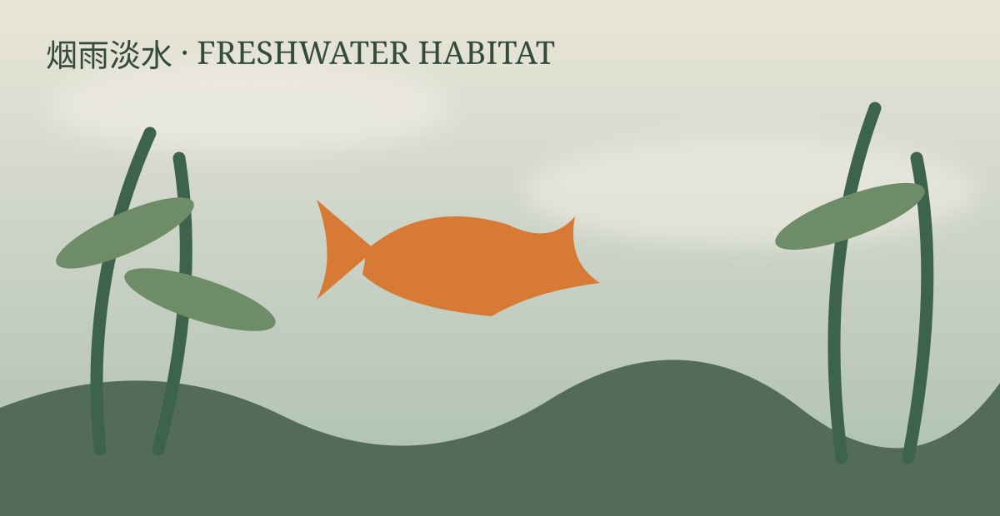
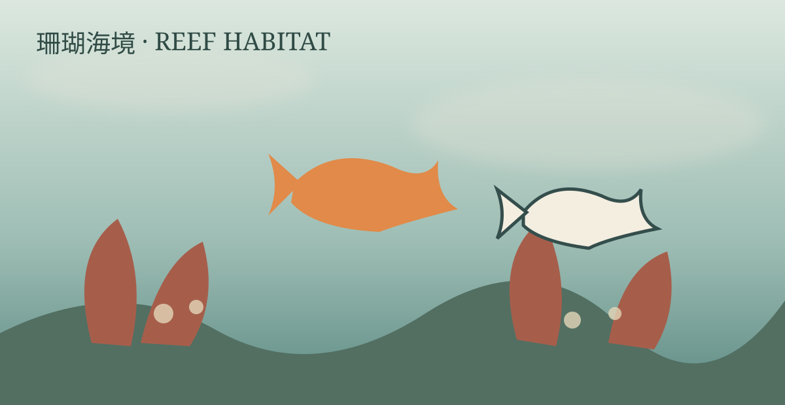

壹适养优先先了解物种需求，再选择伙伴
贰生态友善优先关注人工繁殖与负责任来源
叁稳定水质过滤、循环与检测同样重要
THE AQUATIC CATALOGUE
雅集藏品
正在整理藏品…
墨
正在展开水族画卷…
商品库存与价格以结账前显示为准。购买活体前，请确认鱼缸已完成循环，并具备适合该物种的空间、水质与同伴条件。


THE AQUATIC CATALOGUE
正在整理藏品…
正在展开水族画卷…
商品库存与价格以结账前显示为准。购买活体前，请确认鱼缸已完成循环，并具备适合该物种的空间、水质与同伴条件。